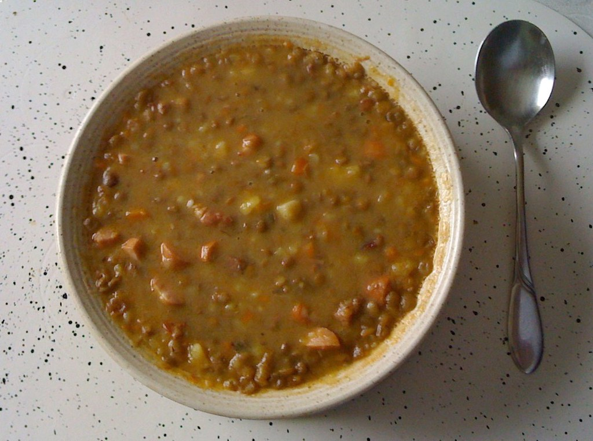

Greek Fakes (Lentil Soup)

Hearty and healthy, Fakes (lentil soup)
is a staple in Greek homes.
Traditionally made on a red (tomato) base,
supported by vegetables like carrot, potato,
onion and garlic and elevated by typical Greek
seasonings like bay leaves, rosemary and oregano.
Tip: To emulate the
authentic Greek experience, serve with
a drizzle of olive oil and a generous
amount of vinegar. Consider plating some
olives on the side, too!
Ingredients
- 8 ounces brown lentils
- ¼ cup olive oil
- 1 medium onion, minced
- 1 large carrot, chopped
- 1 tablespoon minced garlic
- 1 quart water
- 2 bay leaves
- 1 teaspoon dried oregano
- 1 pinch crushed dried rosemary (Optional)
- 1 tablespoon tomato paste
- salt and ground black pepper to taste
- 1 teaspoon olive oil, or to taste
- 1 teaspoon red wine vinegar, or to taste (Optional)
Steps
-
Place lentils in a large saucepan; add enough water to cover by 1 inch.
Bring water to a boil and cook for 10 minutes; drain.
-
Heat olive oil in a saucepan over medium heat.
Add onion, carrot, and garlic; cook and stir until onion has softened and turned translucent, about 5 minutes.
Pour in lentils, then add 1 quart water, bay leaves, oregano, and rosemary.
Bring to a boil. Cover and reduce heat to medium-low; simmer for 10 minutes.
-
Stir in tomato paste; season with salt and pepper.
Cover and simmer, stirring occasionally, until lentils have softened, 30 to 40 minutes.
Add additional water if soup becomes too thick.
Drizzle with olive oil and red wine vinegar to serve.
Home